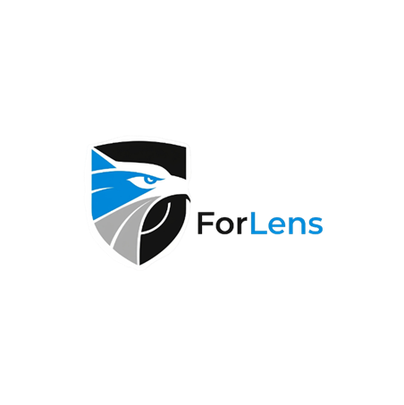

Prototype
Validate endpoint telemetry, AI scoring, dashboard actions, and log verification in a controlled lab.

ForLensDelivery Plan
The roadmap connects academic evaluation with a realistic path toward SME pilot adoption.
Assessment Timeline
The timeline follows the sequence in the provided assessment screenshot and separates academic checkpoints from product commercialization work.
25 Mar
26 May
30 Jun - 16 Jul
23 Jul
Aug - Sep
15-19 Dec
Mar - Apr
Mar
May
June
June
Initial problem exploration for SME endpoint security, stakeholder needs, and feasible research scope.
Commercial Roadmap
Validate endpoint telemetry, AI scoring, dashboard actions, and log verification in a controlled lab.
Run a small SME pilot with cloud dashboard hosting, benchmark knowledgebase, and admin notification chains.
Offer per-endpoint subscription plans with reporting, support workflows, and onboarding documentation.
Enable managed service providers to monitor multiple SME clients from a standardized operations layer.